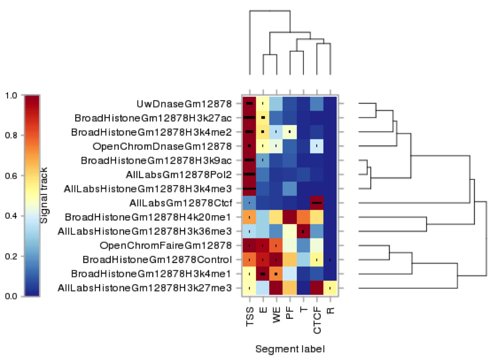

You might have reached this page to find out more about the segmentation process referred to in the paper of Buenrostro, J., Giresi, P., Zaba, L. et al. (2013).
The paper is referring to segmentation tracks from 2013. These six segmentation tracks are still available on the Ensembl ftp site: https://ftp.ensembl.org/pub/release-73/regulation/homo_sapiens/.
The relevant part of the page from 2013 is copied below for reference. The final section on how to find the tracks in the Ensembl genome browser has been excluded in order to avoid confusion, since these tracks are no longer available in the browser.
The ENCODE combined segmentation classifies the genome into regions such as predicted promoters, enhancers, and repressed (see table below). These are genomic regions of similar signal over 14 assays to obtain. Each defines a single-track summary of the functional architecture of the human genome in one of six cell types.
The assays were generated in the ENCODE project for GM12878, K562, H1-hESC, HepG2, HeLa-S3, and HUVEC, and were chosen to maximise information content about the state of the genome. These assays (including control input sequencing) were coordinated across all cell lines and constituted from three classes of data:
| Input Data Class | Description |
|---|---|
| Open chromatin | DNase1 hypersensitivity and FAIRE |
| Transcription factors | PolII and CTCF |
| Histone modifications | H3k4me1, H3k4me2, H3k4me3, H3k9ac, H3k27ac, H3k27me3, H3k36me3, H4k20me1 |
Two unsupervised segmentation programs were used:
ChromHMM labels each assay as high or low in 200 base pair bins over the whole human genome and runs a 25-state Hidden Markov Model.
A Dynamic Bayesian Network approach using base-pair resolution real valued signal data, trained over the ENCODE pilot regions (1% of the genome), and fitted over the whole genome.
The segmentations produced by these two methods were then combined based on their agreements in an automated fashion, in order to maximise resolution and biological interpretability. The segments were then labelled according to their signal distribution and genomic location, giving the following classifications:
| Abbreviation | Description |
|---|---|
| CTCF | CTCF enriched element |
| WE | Predicted weak enhancer or open chromatin cis regulatory element |
| T | Predicted transcribed region |
| E | Predicted enhancer |
| PF | Predicted promoter flanking region |
| R | Predicted repressed or low activity region |
| TSS | Predicted promoter region including transcription start site |
The following graphic shows clustering of informative features used to generate the different classes of segment. The x-axis refers to the segment class and the y-axis shows different groups of experiments for a given feature type e.g DNase1, H3K4me2 etc. The colour indicates whether an experimental mark is strongly associated to a segment class.
|  |
For example, we observe the following associations:
|